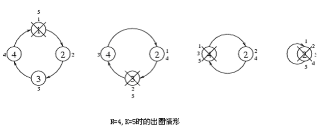
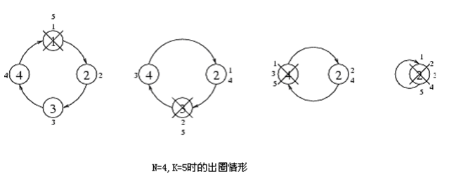

有编号从1到n的n个小朋友在玩一种出圈的游戏,编号为i+1的小朋友站在编号为i小朋友左边。编号为1的小朋友站在编号为n的小朋友左边。首先编号为1的小朋友开始报数，接着站在左边的小朋友顺序报数，直到数到某个数字K时就出圈。直到所有的小朋友都出圈，则游戏完毕。游戏过程如下图所示。

| F.A.Qs | Home | Discuss | ProblemSet | Status | Ranklist | Contest | 入门OJ | ModifyUser Xeonacid | Logout | 捐赠本站 |
|---|
有编号从1到n的n个小朋友在玩一种出圈的游戏,编号为i+1的小朋友站在编号为i小朋友左边。编号为1的小朋友站在编号为n的小朋友左边。首先编号为1的小朋友开始报数，接着站在左边的小朋友顺序报数，直到数到某个数字K时就出圈。直到所有的小朋友都出圈，则游戏完毕。游戏过程如下图所示。

第一行有一个正整数n, 2 <= n <= 20，第二行有n 个整数其中第i个整数表示编号为i 的小朋友第i个出圈。
求最小的K，如果不存在，则输出一个单词“NIE”